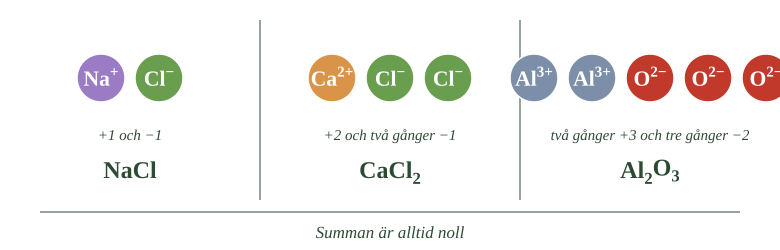
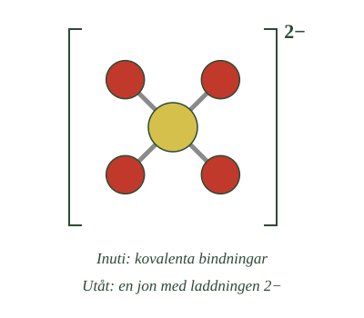

- Summan av alla laddningar i ett salt måste vara noll
- Antalet joner väljs så att plus och minus tar ut varandra
- NaCl: en plus mot en minus
- \(\ce{CaCl2}\): en plus två mot två gånger minus ett
- \(\ce{Al2O3}\): två gånger plus tre mot tre gånger minus två
Nu ska du lära dig skriva formler för salter själv. Regeln är en enda, och den är enkel.
Allt måste gå jämnt ut
Den totala laddningen i ett salt måste vara noll.
Det är hela regeln. Antalet joner av varje slag väljs så att plus och minus tar ut varandra exakt.
Tänk på det som en balansvåg. Positiva laddningar på ena sidan, negativa på andra. Vågen måste stå rakt.
Enklaste fallet
Natrium bildar \(\ce{Na+}\) med laddningen plus ett. Klor bildar \(\ce{Cl-}\) med laddningen minus ett.
En av varje ger plus ett och minus ett. Summan blir noll.
Formeln blir NaCl.
När det inte går jämnt ut direkt
Kalcium bildar \(\ce{Ca^2+}\) med laddningen plus två. Klorid har fortfarande minus ett.
En kalciumjon och en kloridjon skulle ge plus två och minus ett. Det blir plus ett över, alltså inte noll.
Vad gör man? Man tar två kloridjoner. Två gånger minus ett blir minus två, och det tar ut plus två.
Formeln blir \(\ce{CaCl2}\). Tvåan står efter Cl eftersom det är kloriden det finns två av.
Ett svårare exempel
Aluminium bildar \(\ce{Al^3+}\) med laddningen plus tre. Syre bildar \(\ce{O^2-}\) med minus två.
Nu går det inte jämnt ut med små tal. Prova:
En av varje: plus tre och minus två. Blir plus ett över. En aluminium och två oxid: plus tre och minus fyra. Blir minus ett över.
Man måste hitta ett tal som både tre och två går jämnt upp i. Det är sex.
Två aluminiumjoner ger två gånger plus tre, alltså plus sex. Tre oxidjoner ger tre gånger minus två, alltså minus sex.
Summan blir noll, och formeln blir \(\ce{Al2O3}\).
- Räkna ihop laddningarna i det första exemplet
- Räkna ihop dem i det andra
- Räkna ihop dem i det tredje
- Vad alla tre har gemensamt

Minsta möjliga tal
En sista regel. Formeln skrivs alltid med de minsta tal som fungerar.
\(\ce{Na2Cl2}\) skulle också gå jämnt ut, men det skriver man aldrig. Det är NaCl som gäller, eftersom förhållandet är detsamma och talen är mindre.
- Vilken regel bestämmer ett salts formel?
- Hur får man fram formeln för natriumklorid?
- Varför blir kalciumklorid \(\ce{CaCl2}\)?
- Hur räknar man ut \(\ce{Al2O3}\)?
- Var kommer jonladdningarna ifrån?
Den sammanlagda laddningen måste bli noll
När man skriver formeln för ett salt måste den sammanlagda positiva och negativa laddningen bli noll. Saltet ska som helhet vara elektriskt neutralt.
Det är hela regeln, och den bestämmer hur många joner av varje slag som ingår.
För natriumklorid är detta enkelt. Natriumjonen har laddningen +1 och kloridjonen −1. En jon av varje ger därför summan noll, och formeln blir NaCl.
Är laddningarna olika stora behövs olika många joner
Kalciumjonen har laddningen +2. Eftersom varje kloridjon har laddningen −1 behövs två kloridjoner för att balansera en kalciumjon. Formeln blir därför \(\ce{CaCl2}\).
Siffran skrivs efter den jon det finns flera av, och den anger hur många.
Samma princip gäller även när båda laddningarna är större än ett. Aluminiumjonen har laddningen +3 och oxidjonen laddningen −2. Här går det inte jämnt ut med en av varje.
Man söker då det minsta tal som båda laddningarna går jämnt upp i, vilket är sex. Två aluminiumjoner ger tillsammans +6 och tre oxidjoner ger −6. Därför blir formeln för aluminiumoxid \(\ce{Al2O3}\).
Jonladdningen följer av platsen i periodiska systemet
Det är alltså jonernas laddningar som bestämmer hur många av varje jon som behövs. Och laddningarna går i de flesta fall att läsa ur det periodiska systemet.
Atomslag i grupp 1 bildar joner med laddningen 1+, grupp 2 ger 2+ och grupp 13 ger 3+. Åt andra hållet ger grupp 17 laddningen 1−, grupp 16 ger 2− och grupp 15 ger 3−.
Det betyder att man kan räkna ut formeln för ett salt man aldrig arbetat med, bara genom att se var atomslagen står. Magnesium i grupp 2 och kväve i grupp 15 ger till exempel \(\ce{Mg3N2}\).
Siffrorna i saltets formel anger alltså antalsförhållandet mellan jonerna, inte antalet atomer i en molekyl.
Jonladdningen går att läsa ur systemet
Standardtexten anger laddningarna som givna. Men de flesta av dem går att räkna ut, och det är precis vad avsnitt 2 i repetitionen handlade om.
Atomslag i grupp 1 har en valenselektron att avge och bildar joner med laddningen 1+. Grupp 2 har två och bildar 2+. Grupp 13 har tre och bildar 3+.
Åt andra hållet: grupp 17 saknar en elektron och bildar 1−. Grupp 16 saknar två och bildar 2−. Grupp 15 saknar tre och bildar 3−.
Mönstret är alltså symmetriskt kring mitten. Det betyder att du kan förutsäga formeln för ett salt mellan två atomslag du aldrig arbetat med, bara genom att se var de står.
Magnesium står i grupp 2 och bildar \(\ce{Mg^2+}\). Kväve står i grupp 15 och bildar \(\ce{N^3-}\). Minsta gemensamma nämnare är sex, alltså tre magnesiumjoner mot två nitridjoner: \(\ce{Mg3N2}\).
Där regeln inte räcker
Övergångsmetallerna i systemets mitt följer inte mönstret.
Järn kan bilda både \(\ce{Fe^2+}\) och \(\ce{Fe^3+}\). Koppar kan bilda \(\ce{Cu+}\) och \(\ce{Cu^2+}\). Vilken laddning som uppstår beror på förhållandena, och det går inte att läsa ur gruppnumret.
Skälet ligger i d-orbitalerna, som du mötte i fördjupningen om periodiska systemets form. Hos övergångsmetallerna ligger flera energinivåer så nära varandra att olika antal elektroner kan avges utan stor skillnad i energikostnad.
Det är därför sådana salter kräver romerska siffror i namnet, vilket underdel C tar upp.
Om modellen: att laddningen följer av gruppnumret är en regel som fungerar för huvudgrupperna och alltså för de flesta salter i skolkemin. Övergångsmetallerna är inte undantag från regeln — de ligger utanför dess giltighetsområde.
- En sammansatt jon består av flera atomer med en gemensam laddning
- Inuti sitter atomerna ihop med kovalenta bindningar
- Utåt fungerar gruppen som en enda jon
- Sulfat, nitrat, karbonat och ammonium är vanliga exempel
- Behövs flera sammansatta joner används parenteser
Alla joner består inte av en enda atom. Du mötte det redan i repetitionen, men nu blir det viktigt på allvar.
Flera atomer, en laddning
En sammansatt jon är en grupp atomer som sitter ihop och tillsammans bär en laddning.
Sulfatjonen \(\ce{SO4^2-}\) är ett exempel. Den består av en svavelatom och fyra syreatomer — fem atomer sammanlagt — och hela gruppen har laddningen minus två.
Andra vanliga är nitratjonen \(\ce{NO3-}\), karbonatjonen \(\ce{CO3^2-}\) och ammoniumjonen \(\ce{NH4+}\).
Lägg märke till den sista: den är positiv. De flesta sammansatta joner är negativa, men ammonium är ett viktigt undantag.
- Hur många atomer som finns innanför hakparentesen
- Var laddningen står skriven
- Om laddningen hör till en enskild atom eller till hela gruppen
- Vilken sorts bindningar som finns inuti

Två bindningstyper i samma ämne
Här kommer något som är kemiskt elegant.
Inuti den sammansatta jonen sitter atomerna ihop med kovalenta bindningar — de delar elektroner, precis som atomerna i en vattenmolekyl.
Utåt fungerar hela gruppen som en enda jon, och den binder till andra joner med jonbindning.
Ett salt som natriumsulfat innehåller alltså båda bindningstyperna samtidigt. Kovalenta inuti sulfatjonen, jonbindning mellan sulfatjonen och natriumjonerna.
Parenteser
När ett salt innehåller flera sammansatta joner behövs parenteser, och de betyder något viktigt.
Kalciumhydroxid skrivs \(\ce{Ca(OH)2}\).
Tvåan står utanför parentesen. Det betyder att det finns två hela hydroxidjoner, alltså två syre och två väte.
Utan parentes skulle \(\ce{CaOH2}\) betyda något helt annat: en syreatom och två väteatomer. Det vore inte hydroxid alls.
Parenteserna är alltså inte pynt. De avgör vad formeln betyder.
- Vad är en sammansatt jon?
- Vilka är de vanligaste?
- Vilken sorts bindningar finns inuti dem?
- Varför behövs parenteser i vissa formler?
- Vad betyder \(\ce{Ca(OH)2}\)?
Vissa joner består av flera atomer
Alla joner består inte av en enda atom. Det finns också sammansatta joner, där flera atomer sitter ihop men där hela gruppen tillsammans har en laddning.
Viktiga exempel är hydroxidjonen \(\ce{OH-}\), nitratjonen \(\ce{NO3-}\), sulfatjonen \(\ce{SO4^2-}\), karbonatjonen \(\ce{CO3^2-}\) och ammoniumjonen \(\ce{NH4+}\).
De flesta sammansatta joner är negativa. Ammoniumjonen är ett viktigt undantag — den är positiv och fungerar därför som katjon i salter.
Två bindningstyper finns i samma ämne
Atomerna inne i en sammansatt jon sitter ihop med kovalenta bindningar. De delar elektroner med varandra, precis som atomerna i en vattenmolekyl gör.
Gruppen som helhet bär däremot en laddning och deltar i jonbindningar med andra joner.
Ett ämne som natriumsulfat innehåller därför båda bindningstyperna samtidigt: kovalenta bindningar inuti sulfatjonen, och jonbindning mellan sulfatjonen och natriumjonerna.
Att laddningen tillhör hela gruppen och inte en enskild atom är viktigt. Sulfatjonens fyra syreatomer är likvärdiga — laddningen sitter inte på någon av dem utan är utspridd över hela jonen.
Parenteser visar att siffran gäller hela jonen
När ett salt innehåller flera sammansatta joner används parenteser i formeln.
Kalciumhydroxid skrivs \(\ce{Ca(OH)2}\). Kalciumjonen har laddningen +2 och varje hydroxidjon −1, så det behövs två hydroxidjoner.
Parentesen visar att tvåan gäller hela gruppen OH. Formeln innehåller alltså två hela hydroxidjoner, tillsammans två syreatomer och två väteatomer.
Utan parentes skulle formeln betyda något annat. \(\ce{CaOH2}\) skulle läsas som en syreatom och två väteatomer, vilket inte är hydroxid alls. Parenteserna är därför inte en formsak utan avgör vad formeln betyder.
Varför laddningen inte sitter på en atom
Standardtexten säger att gruppen som helhet bär en laddning. Var sitter den då?
Svaret är att den inte sitter någonstans bestämt — den är utspridd över hela jonen.
I sulfatjonen är alla fyra syreatomerna likvärdiga. Man skulle kunna tro att två av dem bär varsin minusladdning och att de andra två är neutrala, men mätningar visar att alla fyra är identiska. Bindningarna till svavlet är lika långa och lika starka.
Fenomenet kallas att laddningen är delokaliserad. Elektronerna hör inte till en bestämd atom utan rör sig över hela gruppen.
Därför är de stabila
Utspridningen förklarar varför sammansatta joner håller ihop så bra.
En koncentrerad laddning är energimässigt dyr — det mötte du i syrornas fördjupning, där vätejonens höga laddningstäthet gjorde den extremt reaktiv. Sprids laddningen över flera atomer blir tätheten lägre och jonen stabilare.
Det är också därför syror som lämnar efter sig en sådan jon ofta är starka. Sulfatjonen och nitratjonen är mycket stabila, och därför avger svavelsyra och salpetersyra sina protoner gärna.
Karbonatjonen och kalksten
En koppling bakåt som knyter ihop mycket.
Karbonatjonen \(\ce{CO3^2-}\) är en sammansatt jon med samma delokaliserade laddning. Den finns i kalksten, i havets karbonatsystem, i bikarbonat och i kalkning av sjöar.
Att den är en bas — den tar upp protoner — är vad som gör kalksten löslig i syra, vad som gör bikarbonat användbart mot halsbränna, och vad som gör kalkning möjlig.
En och samma jon förklarar alltså vittrade gravstenar, brustabletter och helikoptrar över svenska sjöar.
Om modellen: standardtexten behandlar sammansatta joner som byggstenar med en given laddning. Delokaliseringen förklarar varför de är stabila nog att fungera som byggstenar över huvud taget.
- Den positiva jonen namnges först, den negativa sedan
- Metallen behåller sitt namn: natrium, kalcium, kalium
- Icke-metallen får ändelsen -id: klorid, oxid, sulfid
- Sammansatta joner har egna namn: sulfat, nitrat, karbonat
- Den negativa jonen kommer från syran, den positiva från basen
Namn på salter följer regler som är ovanligt förutsägbara. Kan du dem kan du namnge nästan vilket salt som helst.
Positiv först, negativ sedan
Grundregeln: den positiva jonen namnges först, den negativa sedan.
Natriumjon plus kloridjon blir natriumklorid. Kalciumjon plus kloridjon blir kalciumklorid. Kaliumjon plus nitratjon blir kaliumnitrat.
Det är samma ordning som i formeln — den positiva jonen skrivs först där också.
Metallen behåller sitt namn
Den positiva jonen heter oftast precis som grundämnet.
Natrium blir natrium. Kalcium blir kalcium. Kalium blir kalium.
Inget krångel där.
Icke-metallen får -id
Den negativa jonen ändrar däremot ändelse. Den får -id på slutet.
Klor blir klorid. Syre blir oxid. Svavel blir sulfid. Fluor blir fluorid.
Så natrium plus klor blir natriumklorid, inte natriumklor.
Sammansatta joner har egna namn
De sammansatta jonerna följer inte -id-regeln utan har egna namn du får lära dig.
Sulfat, nitrat, karbonat, fosfat, hydroxid.
Natriumjon plus sulfatjon blir natriumsulfat. Kalciumjon plus karbonatjon blir kalciumkarbonat.
Var jonerna kommer ifrån
Här kommer en koppling som gör namnen begripliga i stället för att bara vara regler.
Den negativa jonen kommer från en syra:
Saltsyra ger klorider. Svavelsyra ger sulfater. Salpetersyra ger nitrater. Kolsyra ger karbonater.
Den positiva jonen kommer från en bas:
Natriumhydroxid ger natriumsalter. Kalciumhydroxid ger kalciumsalter.
Det betyder att du kan räkna ut vilket salt en neutralisation ger. Saltsyra och natriumhydroxid ger klorid från syran och natrium från basen — alltså natriumklorid.
Vi använder det i avsnitt 4.
- I vilken ordning namnges jonerna?
- Vilken ändelse får icke-metalljoner?
- Vad heter de sammansatta jonerna?
- Varifrån kommer saltets två joner?
- Kan man förutsäga vilket salt en neutralisation ger?
Katjonen först, anjonen sedan
Namn på salter följer bestämda regler, och de är ovanligt förutsägbara.
Namnet består vanligtvis av katjonens namn följt av anjonens namn. Natriumklorid består av natriumjoner och kloridjoner. Kalciumklorid består av kalciumjoner och kloridjoner. Kaliumnitrat består av kaliumjoner och nitratjoner.
Det är samma ordning som i formeln, där den positiva jonen skrivs först.
Icke-metalljoner får ändelsen -id
Den positiva jonen heter oftast precis som grundämnet. Natrium blir natrium, kalcium blir kalcium.
Enkla joner av icke-metaller ändrar däremot ändelse och får -id. Klor bildar kloridjoner, syre bildar oxidjoner och svavel bildar sulfidjoner.
Sammansatta joner behåller sina egna namn, till exempel sulfat, nitrat, karbonat och fosfat. De följer alltså inte -id-regeln.
Namnet anger vilka joner som ingår, medan formeln anger i vilket antalsförhållande de förekommer. Natriumklorid och kalciumklorid innehåller båda kloridjoner, men i olika antal per katjon.
Anjonen kommer från syran och katjonen från basen
Här finns en tydlig koppling till de syror och baser vi tidigare har arbetat med.
Saltsyra kan ge klorider, salpetersyra nitrater, svavelsyra sulfater och kolsyra karbonater. Natriumhydroxid ger natriumsalter, kaliumhydroxid kaliumsalter och kalciumhydroxid kalciumsalter.
När en syra reagerar med en bas vid en neutralisation kommer den negativa delen av saltet från syran, medan den positiva jonen kommer från basen.
Med hjälp av jonernas namn och laddningar går det därför ofta att förutsäga vilket salt som kommer att bildas. Saltsyra och natriumhydroxid ger klorid från syran och natrium från basen — alltså natriumklorid.
| Syra | Anjon | Salten kallas | Exempel |
|---|---|---|---|
| Saltsyra | Klorid | Klorider | Natriumklorid |
| Svavelsyra | Sulfat | Sulfater | Kalciumsulfat |
| Salpetersyra | Nitrat | Nitrater | Kaliumnitrat |
| Kolsyra | Karbonat | Karbonater | Kalciumkarbonat |
När metallen kan ha flera laddningar
Standardtexten säger att katjonen heter som grundämnet. För huvudgruppernas metaller stämmer det alltid, eftersom de bara bildar en sorts jon.
Övergångsmetallerna är annorlunda, som du såg i fördjupningen till underdel A. Järn kan bilda både \(\ce{Fe^2+}\) och \(\ce{Fe^3+}\).
Det ger ett problem. "Järnklorid" är tvetydigt — det kan betyda \(\ce{FeCl2}\) eller \(\ce{FeCl3}\), som är två olika ämnen med olika färg och olika egenskaper.
Lösningen är romerska siffror som anger jonens laddning:
Järn(II)klorid är \(\ce{FeCl2}\), med \(\ce{Fe^2+}\). Järn(III)klorid är \(\ce{FeCl3}\), med \(\ce{Fe^3+}\).
Siffran står inom parentes direkt efter metallens namn och uttalas som ett tal: järn-två-klorid.
Samma system används för koppar(I) och koppar(II), för bly(II) och bly(IV), och för alla andra metaller som kan bilda flera joner.
Äldre namn som lever kvar
Innan romerska siffror infördes användes latinska namn med ändelser.
Den lägre laddningen fick -o, den högre -i. Ferroklorid var \(\ce{FeCl2}\) och ferriklorid var \(\ce{FeCl3}\). Kuprosulfat och kuprisulfat på samma sätt.
Systemet var svårt att använda, eftersom det bara angav vilken av två som avsågs — inte vilken laddningen faktiskt var. Det övergavs därför, men namnen dyker fortfarande upp i äldre litteratur och i vissa branscher.
Ordet ferrit i magnetiska material och ferritin i kroppens järnlager kommer från samma latinska rot.
Trivialnamn
En sista kategori: namn som inte följer några regler alls.
Koksalt, bordssalt, kalk, släckt kalk, soda, bikarbonat, salmiak, gips — alla är salter, och inget av namnen säger vilka joner som ingår.
De lever kvar för att ämnena användes långt innan kemin kunde beskriva dem. Att veta både trivialnamnet och det systematiska är praktiskt: det första används i butiken, det andra i laboratoriet.
Om modellen: namngivningsreglerna är byggda för att namnet ska kunna översättas till en formel och tillbaka. Trivialnamnen fungerar tvärtom — de säger vad ämnet används till, inte vad det består av.
Laddar övningskort…
Laddar frågor ...